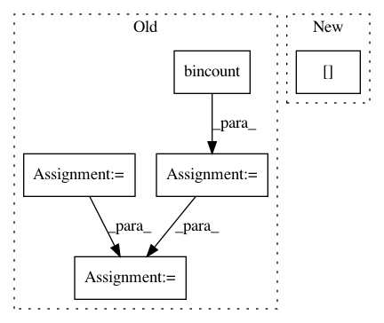

5ffa38fca42bb3fbee030f4b80264e0f4910a49c,torch_geometric/datasets/utils/tu_format.py,,read_adj,#Any#Any#,15
Before Change
def read_adj(dir, prefix):
index = read_file(dir, prefix, "A")
index = index.t().long() - 1
new_index = index.new(index.size()).copy_(index)
indicator = read_file(dir, prefix, "graph_indicator").long() - 1
bincount = torch.from_numpy(np.bincount(indicator.numpy()))
index_slice = index.new(bincount.size(0) + 1)
index_slice[0] = 0
curr_graph = indicator[0]
for i in range(index.size(1)):
row = index[0, i]
if indicator[row] > curr_graph:
new_index[:, i:] -= bincount[curr_graph]
curr_graph += 1
index_slice[curr_graph] = i
index_slice[-1] = index.size(1)
index = new_index
After Change
for i in range(index.size(1)):
row = index[0, i]
if indicator[row] > curr_graph:
index[:, index_slice[curr_graph]:i] -= index[:, index_slice[curr_graph]:i].min()
curr_graph += 1
index_slice[curr_graph] = i
index[:, index_slice[curr_graph]:] -= index[:, index_slice[curr_graph]:].min()
In pattern: SUPERPATTERN
Frequency: 3
Non-data size: 5
Instances
Project Name: rusty1s/pytorch_geometric
Commit Name: 5ffa38fca42bb3fbee030f4b80264e0f4910a49c
Time: 2018-01-16
Author: matthias.fey@tu-dortmund.de
File Name: torch_geometric/datasets/utils/tu_format.py
Class Name:
Method Name: read_adj
Project Name: biolab/orange3
Commit Name: 088b10a9b6621472af54635e761bda0dd775836f
Time: 2012-09-26
Author: janez.demsar@fri.uni-lj.si
File Name: Orange/classification/majority.py
Class Name: MajorityLearner
Method Name: __call__
Project Name: scipy/scipy
Commit Name: 2a28ba889d85c28e490b8b99aef8909e4602aff5
Time: 2019-06-30
Author: rlucas7@vt.edu
File Name: scipy/stats/_binned_statistic.py
Class Name:
Method Name: binned_statistic_dd